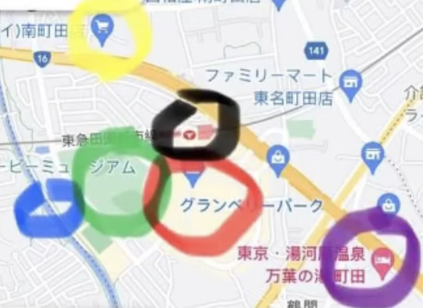

景點推薦



南町田火車站周邊景點
黃色: 超市(像在日本的全聯價格偏便宜 但只能現金、很早就關門)
黑色: 南町田車站
紅色: 南町田 outlet
綠色: 鶴間公園
藍色: 河堤(過鶴間一號橋、左轉一分鐘,右轉的話下不去、但可以看到超級大條魚)
紫色: 該區滿知名的飯店,但過馬路要小心,車有點多

teamLab Planets TOKYO 沉浸式美術館
展期延至2027
在指定時間排隊後，您可能需要等待 30 至 60 分鐘
一開始就需脫鞋襪進入，經過一段水路進入
嬰兒車無法進入會場